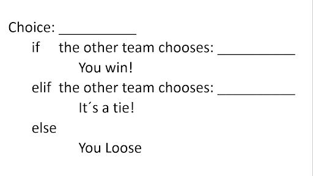
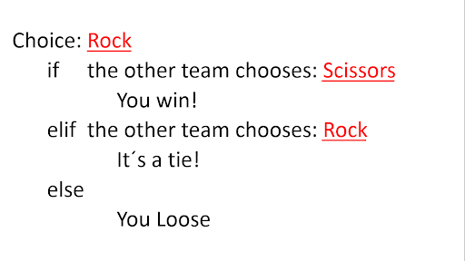
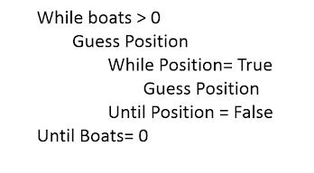
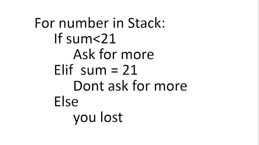

-
Sillas musicales
Ejercicio relacionado con temas de programación If y else.- Materiales: sillas (para cada alumna), una bocina.
- Ejercicio grupal.
- Duración: 15-20 mins
- Formar una fila de sillas volteadas de manera intercalada, debe haber una silla por alumna al inicio del juego.
- Poner música.
- Mientras que la música suene, deberán dar vueltas a las sillas bailando.
- Al apagar la música deberán encontrar una silla desocupada y sentarse.
- Al final de la ronda se elimina una silla y se inicia de nuevo.
- La participante que se quede sin asiento será eliminada.
-
Piojitos
- Materiales: una hoja de papel para cada niña, lápices de colores y plumones.
- Actividad Individual
- Duración: 5 -10 mins
- Decorar el piojito
-
Loteria
Tema relacionado con temas de programación if y else.- Materiales: juego de Lotería.
- Ejercicio grupal
- Duración: 25-30 mins.
- Dar un tarjetón de lotería a cada niña
- Mostrar las cartas y nombrarlas en orden de aparición.
- Las niñas deberán marcar las cartas extraídas en sus tarjetones con fichitas
-
Diagrama de flujo actuado
- Materiales:
- Actividad grupal.
- Duración: 15-20 mins
- Crear una situación hipotética en un restaurante.Materiales:
- Formar equipos dependiendo del número de niñas.
- Entre ellas deberán de pensar en todas las opciones posibles
- En la situación para después actuar según las respuestas de la instructora.
-
Canasta:
Tema relacionado con temas de programación if y else.- Duración: 15 minutos
- Materiales:
Pelotas pequeñas
Una mesa
Botes medianos
- Las chicas se separan en dos grupos y hacen filas
- Los grupos se colocan al extremo de cada mesa
- El objetivo es meter las pelotas dentro de los botes del equipo contrario
- Si la chica no logra meter una pelota en el bote de su adversario se deberá ir al final de la fila a esperar jugar de nuevo. En caso de que se logre insertar la pelota dentro del bote de su contrincante éste deberá ser retirado, al final el equipo que se quede sin ningún bote primero será el perdedor.
-
El barco se hunde
- El Facilitador indica al grupo de chicas que tienen que formar equipos compuestos por un número exacto de personas que pueden entrar en cada “barco”. Si tienen más o menos personas, se declara hundido el barco.
- El Facilitador cambia el número de personas y así se prosigue hasta que lo considere conveniente. >
- Deben darse unos cinco segundos para que se formen los barcos, antes de declararlos hundidos. El Facilitador debe dar las órdenes rápidamente para hacer la dinámica ágil y sorpresiva.
-
Piedra Papel o Tijera
Ejercicio Relacionado con temas de programación Else y Elif.- Materiales: Pizarrón, plumones rojos y negros.
- Ejercicio en Parejas
- Duración: 5 -15 minutos.
- Cada persona debe formar en el pizarrón el siguiente esqueleto 
- todas deberán jugar una ronda de piedra, papel o tijera con sus respectivas parejas, y conforme se de el juego rellenar el esqueleto. Ejemplo: 
-
Batalla Naval
Actividad relacionada con los temas de programación Nested Loops y While loops. (Podría incluirse el tema Random) Materiales:- Dos Plantillas Cuadriculadas (representarán las casillas)
- Un “muro separador”
- Dos plumones.
- Barcos:
- Apoyo visual: 
3 barcos de 2 casillas
2 barcos de 3 casillas
2 barco de 4 casillas
1 barco de 5 casillas
Dividir al grupo en dos equipos.
Duración: 30-40 minutos si las plantillas son muy grandes.
Instrucciones:- Cada equipo coloca sus barcos en las casillas del tablero. El tablero del equipo contrario no puede ser visto.
- El primer equipo debe enunciar las coordenadas que desea atacar (x,y).
- Cuando un barco ha recibido un daño en cada casilla que ocupa, entonces el barco se habrá hundido. El equipo del barco dañado debe decir "BARCO HUNDIDO".
- Todas las coordenadas se marcan en el tablero para que no se repitan. Cuando una coordenada “golpea” un barco del equipo contrario se coloca una equis. Cuando la coordenada no “cae” sobre un barco, se marca con un punto.
- Gana el equipo que hunda primero los 8 barcos de su enemigo.
Si en las coordenadas se encuentra un barco o parte de él, entonces el barco recibe el daño y el jugador da una nueva coordenada.
Si en las coordenadas no se encuentra un barco, entonces el equipo contrario dice "AGUA" para hacer saber al equipo en turno que ha fallado, terminando su turno.
-
Blackjack
Actividad relacionada con temas de programación for loops e input.- Materiales: baraja de cartas, apoyo visual: 
- Actividad grupal
- Duración: 25 - 30 mins
- Este juego consiste en enfrentarse de forma individual a la casa, comparando su mano con la de cada jugador, intentando conseguir 21 puntos o el número más cercano posible sin pasarse. Para conseguir dicha puntuación se suman los valores de dos cartas que se reparten de inicio a cada jugador con los de aquellas nuevas cartas que, opcionalmente, se podrán añadir en el turno de juego.
- Se hace una primera ronda, en la que se entregan las dos primeras cartas aleatorias a cada jugador.
- Acto seguido se hace una segunda ronda, en la que el jugador puede pedir otra carta o no; se prosigue con las rondas hasta que ningún jugador pida cartas.
- Después se descubren las cartas y se comparan con las de la casa. Si la casa suma 21, gana, incluso contra los jugadores que también tengan 21, si la casa suma menos de 21, pierde contra todos aquellos que tengan un valor mayor o 21, si la casa se pasa de 21, todos los jugadores ganan. (Si el jugador se pasa de esos 21 puntos pierde, indistintamente de lo que haga la casa)
-
Suma con dados
- Materiales: 3 dados, hojas para escribir, lápiz
- Duración: 15-20 min
- La actividad tiene como objetivo introducir el funcionamiento de un loop.
- While. Se toma un par de dados y se tiran tres veces, el resultado (x) de la suma será la condición inicial del while. Se anotará este número. (While < x)
- Se lanzará el dado y se sumará en cada lanzamiento el número que cae, ejemplo, se repite este proceso siempre y cuando el resultado de la suma cumpla con la condición inicial. Ejemplo: Si en el punto ii) la condición inicial fue 36, se tirará el dado n número de veces y se sumará cada número, siempre y cuando el resultado de la suma sea menor a 36.
- For. Se toma un dado, se lanza y el valor que salga será el valor inicial(x). De manera similar, se toman dos dados y se lanzan dos veces. El resultado de la suma de los dos lanzamientos será el valor final (y). El intervalo de valores es [x , y].
- Posteriormente, se tomará un dado y se lanzará. El valor de este lanzamiento se convertirá en el contador para el for. Esto quiere decir, que al valor inicial se le sumará el contador, n número de veces hasta llegar al valor final.
- Se escribirá una lista con el valor inicial, final, y todos los números dentro de este intervalo que sean parte de la suma.